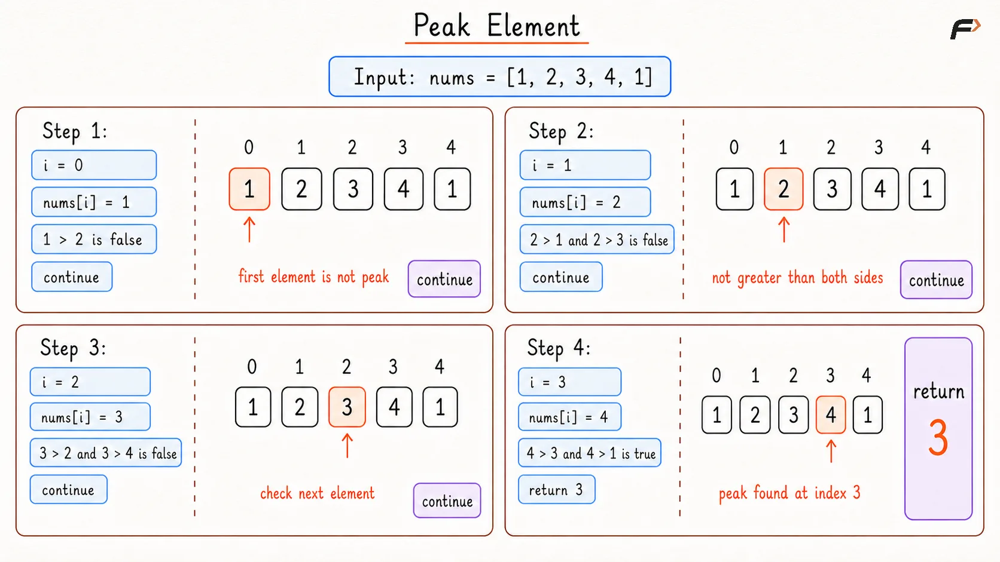
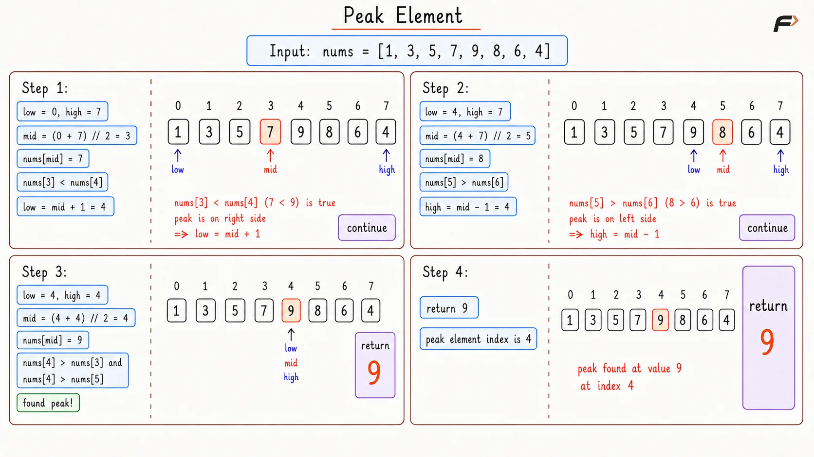

Find a Peak Element in an Array
A peak element is an element that is strictly greater than its neighbors. Given a 0-indexed integer array nums, find a peak element, and return its index. If the array contains multiple peaks, return the index to any of the peaks.
You may assume that an element is always considered to be strictly greater than a neighbor that is outside the array boundary (nums[-1] = nums[n] = -INF).
Example 1
Input: nums = [1, 2, 3, 1]
Output: 2
Explanation: 3 is greater than both 2 and 1, so index 2 is a valid peak.
Example 2
Input: nums = [1, 2, 1, 3, 5, 6, 4]
Output: 5
Explanation: 6 is greater than 5 and 4, so index 5 is a valid peak. Index 1 is also a valid answer because 2 is also a peak.
Brute Force Approach
The most direct idea is to check for every element whether it is greater than its neighbors. If yes, that position is a peak.
This approach is easy to think of because the definition of a peak is already given clearly in the problem.
Algorithm
If the array has only one element, return
0because that element is automatically a peak.Check each index from left to right and compare the current element with its valid neighbors.
For the first element, compare only with the next element, as the left neighbor is -INF.
For the last element, compare only with the previous element, as the right neighbor is -INF.
For every middle element, check whether it is greater than both neighbors.
As soon as a valid peak is found, return its index.
Dry Run

Peak Element Brute Dry Run
Solution
#include <bits/stdc++.h>
using namespace std;
class Solution {
public:
/*
Returns the index of
any valid peak element.
*/
int findPeakElement(vector<int>& nums) {
// A single element is always a peak.
if (nums.size() == 1) {
return 0;
}
for (int i = 0; i < (int)nums.size(); i++) {
// Check the first element using only the right neighbor.
if (i == 0) {
if (nums[i] > nums[i + 1]) {
return i;
}
} else if (i == (int)nums.size() - 1) {
// Check the last element using only the left neighbor.
if (nums[i] > nums[i - 1]) {
return i;
}
} else {
// A middle element is a peak only if it is greater than both sides.
if (nums[i] > nums[i - 1] && nums[i] > nums[i + 1]) {
return i;
}
}
}
return -1;
}
};
// Driver code starts
int main() {
vector<int> nums = {1, 2, 1, 3, 5, 6, 4};
Solution obj;
cout << obj.findPeakElement(nums) << endl;
return 0;
}Complexity Analysis
Time Complexity: O(N), N is the length of array, because in the worst case every element may need to be checked.
Space Complexity: O(1), because only a few extra variables are used.
Optimal Approach
The key observation is very small but very powerful.
If nums[mid] < nums[mid + 1], the array is rising at that point. That means a peak must exist somewhere on the right side.
Since the values cannot keep rising forever, at some point either the array ends, making the last element a peak, or the rise stops, creating a peak before that drop.
If nums[mid] > nums[mid + 1], then the array is falling at that point, so a peak must exist on the left side including mid.
So comparing just mid and mid + 1 is enough to remove half of the search space safely.
Algorithm
Start with two pointers,
low = 0andhigh = n - 1, because the peak can be anywhere in the array.Keep searching while
low < high, because the answer is not fixed until both pointers meet.Find the middle index using
mid = low + (high - low) / 2.If
nums[mid] < nums[mid + 1], move to the right half by settinglow = mid + 1because a peak must exist there.Otherwise, keep the left half including
midby settinghigh = midbecausemiditself can still be a peak.When
lowandhighbecome equal, return that index because the search has narrowed down to one valid peak position.
Key Points
high = midis important here becausemidmay itself be the answer.The usual version of this problem has
nums[i] != nums[i + 1], which keeps the slope decision clean.
Dry Run

Find Peak Element Optimal Dy Run
Solution
#include <bits/stdc++.h>
using namespace std;
class Solution {
public:
/*
Returns the index of
any valid peak element.
*/
int findPeakElement(vector<int>& nums) {
// Left boundary of the current search range.
int low = 0;
// Right boundary of the current search range.
int high = (int)nums.size() - 1;
// Keep shrinking the search range until one peak position remains.
while (low < high) {
// Calculate the middle index safely.
int mid = low + (high - low) / 2;
// A rising slope means some peak must exist on the right side.
if (nums[mid] < nums[mid + 1]) {
low = mid + 1;
} else {
// A falling slope means mid or the left side contains a peak.
high = mid;
}
}
return low;
}
};
// Driver code starts
int main() {
vector<int> nums = {1, 2, 1, 3, 5, 6, 4};
Solution obj;
cout << obj.findPeakElement(nums) << endl;
return 0;
}Complexity Analysis
Time Complexity: O(log N), N is the length of array, because half of the search range is removed in each step.
Space Complexity: O(1), because constant space is used.
Interview follow-up Questions
Because if the array is rising at mid, it must eventually end at a peak or turn downward and create one. So a peak is guaranteed on that side.